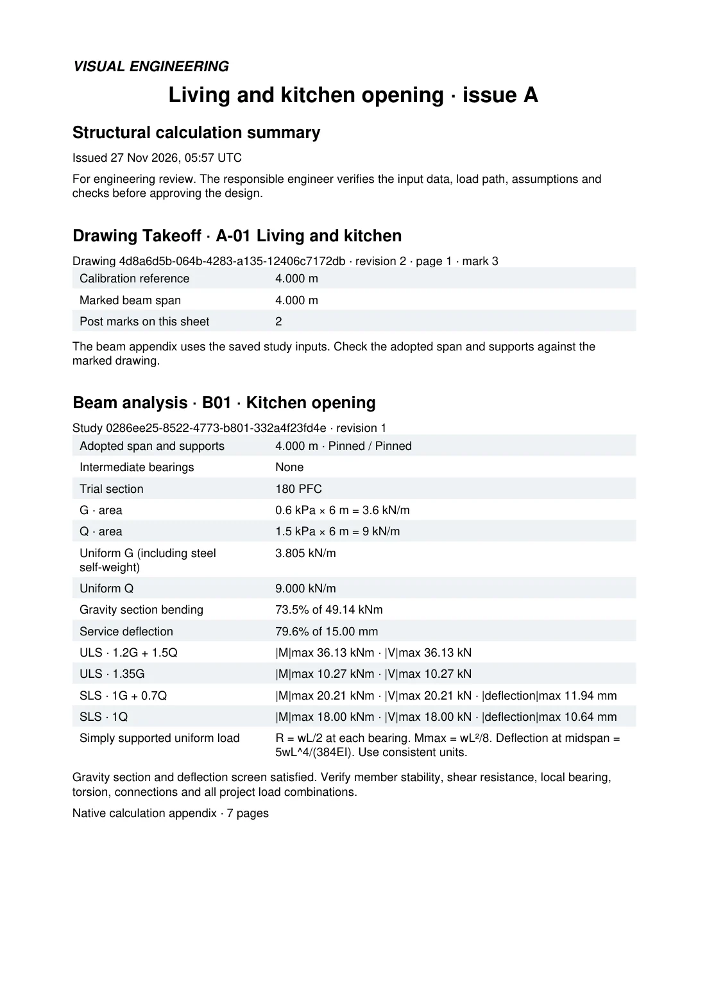

Living and kitchen opening
Issue A records a 4.00 m beam with two pinned bearings and a 6 m tributary floor width. Read the saved drawing reference and the 180 PFC gravity screen, then follow the equations, reactions and deflections in the seven-page calculation appendix.
Loading the report…
